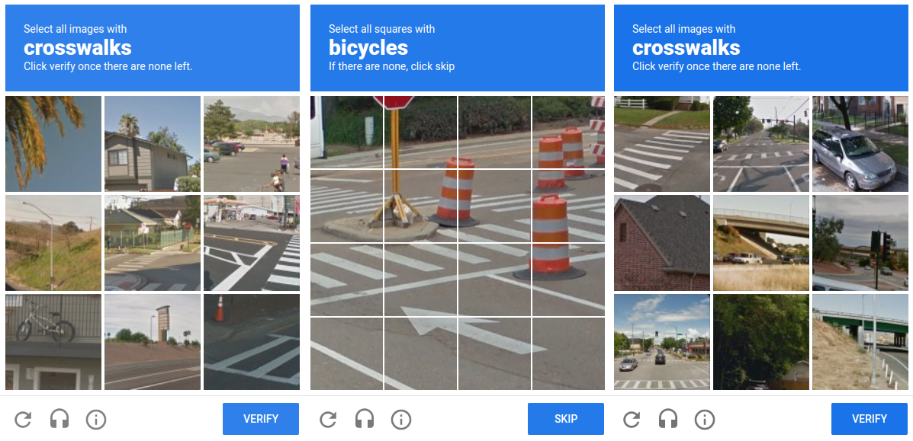
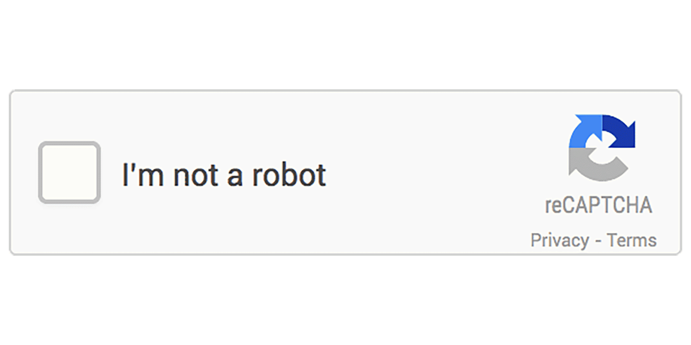

Why "select all images with cars" exists, the quiet controversy behind it — and a high-level look at how Google decides you're a human, often without a single click.

You're trying to log in or buy something, and a little box appears: "Select all images with cars." A grid of blurry street photos. You click the cars, hit verify, and the site finally lets you in. Mildly irritating, over in five seconds, and you never think about it again.
That box is a CAPTCHA — short for "Completely Automated Public Turing test to tell Computers and Humans Apart." In plain words: a tiny puzzle that's easy for a person but hard for a bot. Websites use it to stop automated programs from creating fake accounts, spamming comments, or buying up every concert ticket in seconds.
The most common one on the internet is Google's reCAPTCHA. Google bought the technology in 2009 and it now guards millions of sites. But that innocent "click the cars" puzzle hides a clever — and controversial — second job.
Here's the part most people don't realize. While you solve that puzzle to prove you're human, you're also doing unpaid work for Google. Every answer you give trains Google's machine-learning systems — and you never agreed to a paycheck for it.
It's not a conspiracy theory; it's how the system was openly designed. The trick is that the puzzle does two jobs at once: it checks if you're human, and it harvests a tiny piece of labeled data.
The original reCAPTCHA showed two warped words. One the system already knew (to test you); the other was a word a computer failed to read while scanning old books and newspapers. When millions of people typed that second word, they were quietly proofreading the world's libraries — for free.
That's where "select all cars / traffic lights / crosswalks" comes from. Those are real street photos (think Google Street View). By clicking the right squares, millions of users labeled images — teaching Google's AI what a car or a crosswalk looks like. That data helps power things like maps and self-driving cars.
The "free labor" idea didn't stay still — it evolved through three distinct eras, each one quietly solving a different problem Google had at the time. Reading them in order is the clearest way to see how a security check turned into the internet's biggest data-labeling machine.
The original puzzle showed two warped words like r7PqM f1XeL. One word the system already knew — that's what tested you. The other came from a scanned old book or newspaper that OCR software (Optical Character Recognition — the tech that turns a photo of text into editable text) couldn't read.
When millions of people typed that mystery word, their answers were compared, and the consensus became the accepted reading. So every login quietly proofread a sliver of a real book. This crowd-proofreading of the world's libraries was the original business idea behind reCAPTCHA — before Google acquired it in 2009.
Once OCR got good enough, Google no longer needed help reading books. So the puzzle switched to photos: cars, buses, traffic lights, crosswalks, fire hydrants, bicycles — exactly the grid in your screenshot.
Why? Google already had billions of Street View images. Collecting pictures was easy; labeling them — teaching a computer "this square is a car" — was the hard, expensive part. Instead of paying thousands of annotators, Google asked millions of users to do it one click at a time, turning verified human answers into a labeled dataset for training computer-vision models (the AI that recognizes objects in images).
Today's reCAPTCHA (v3 and newer) often shows no puzzle at all. Instead it watches signals — mouse movement, typing rhythm, click timing, browser and device details, cookies, IP reputation — and computes a probability like "human score = 0.98." Only suspicious visitors get an image challenge.
We'll unpack exactly how this scoring works in section 5 — but note the irony: the puzzle that built two giant datasets has now mostly disappeared, replaced by silently watching you.
The newer versions of reCAPTCHA made things even smoother — sometimes you just tick a box that says "I'm not a robot," or you do nothing at all and the site lets you through. Magic? Not quite. To decide you're human without a puzzle, Google has to watch how you behave.

Behind that simple checkbox, it looks at signals like how your mouse moved, how fast you typed, your browser fingerprint, and — critically — whether you're already signed in to Google and what your past activity looks like. Privacy advocates point out this means a Google tracker is now sitting on millions of websites, quietly observing visitors who never chose to interact with Google at all.
You don't need the deep internals — just the big idea. Modern reCAPTCHA almost never starts with a puzzle. It starts by quietly scoring how human you seem, and only falls back to "click the cars" if it's unsure. Think of a nightclub bouncer who usually waves you in after a glance, and only asks for ID when something looks off.
The moment you land on the page, a small Google script observes natural human "messiness" — how your cursor wanders, micro-pauses while typing, your browser details, and existing Google cookies. Bots tend to move in suspiciously perfect, robotic ways.
All those signals become a single confidence score: how likely is this a real person? A high score means you sail through — that's why you often click nothing, or just one checkbox. A low score means "let's double-check."
Only when the score is doubtful does the image challenge appear. It's the backup test — and, conveniently, the moment Google also collects a labeled answer from you. Pass it and you're in; fail and you get a harder round.